µSystem 8086
A cycle-accurate 8086/8088 computer you build chip by chip, wire by wire — in one HTML file, with no install, no server and no accounts.
Build a computer chip by chip on a schematic canvas, write 8086 assembly, and watch every wire carry a real logic level. The CPU is cycle-accurate and passes the complete SingleStepTests/8088 suite — 3,007,000 of 3,007,000 tests exactly. The address map is not declared anywhere: it is measured by driving your own decode gates and recording which chip answers.
- 21 ready-made boards, nine with guided labs
- 52 modelled chips and devices
- 1 HTML file — no install, no server, no accounts
- 570 screenshots in this guide
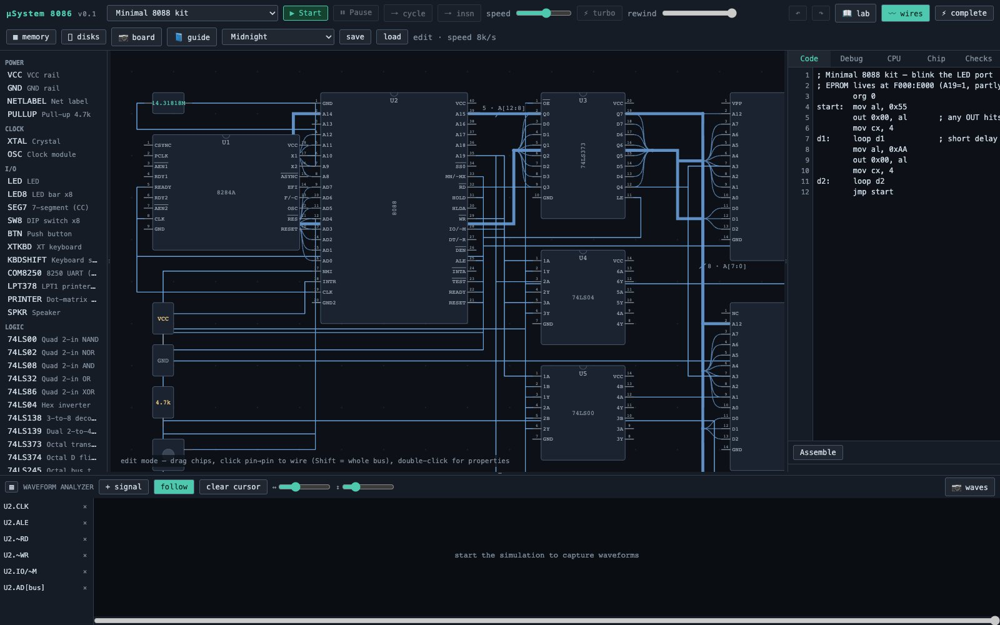
What is in here
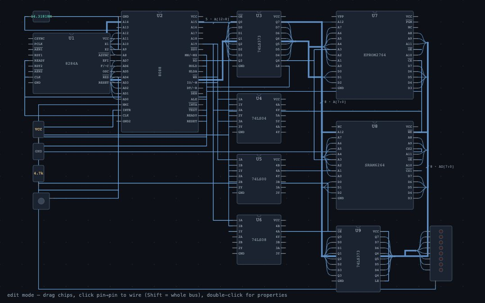
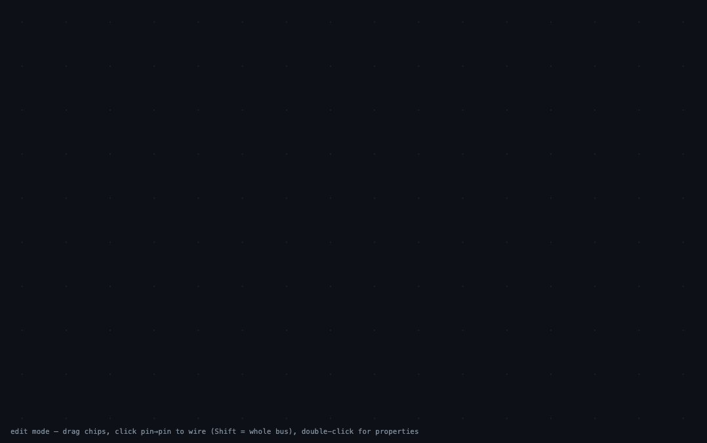
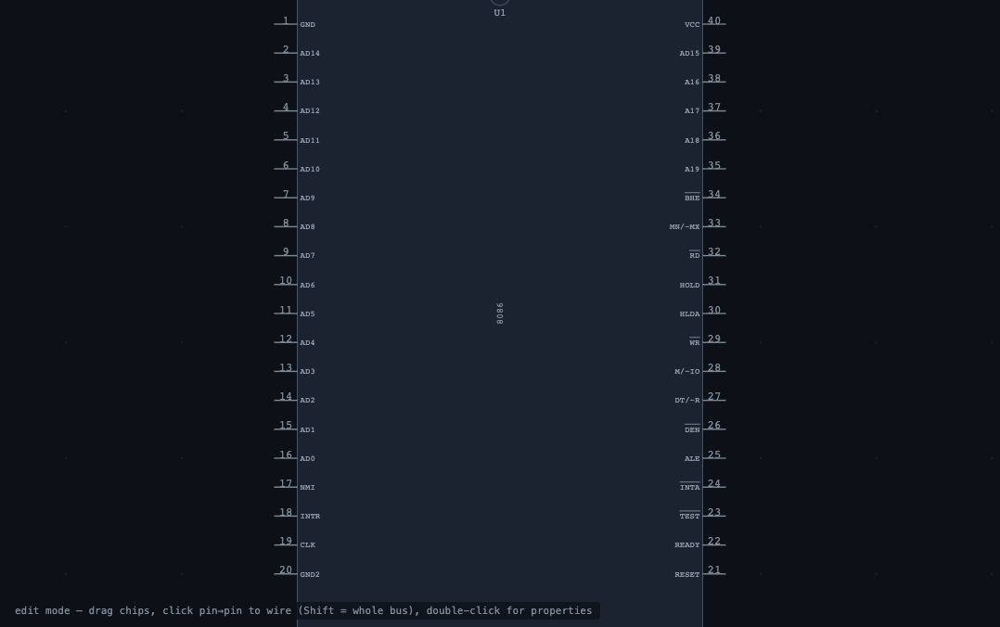
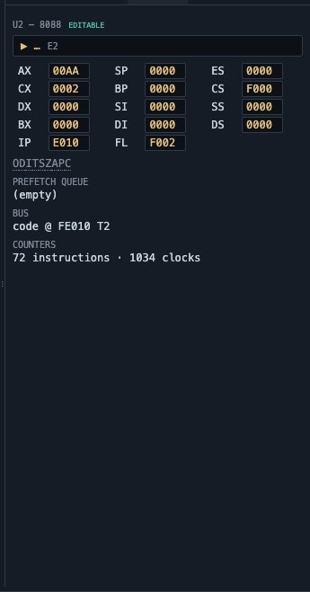
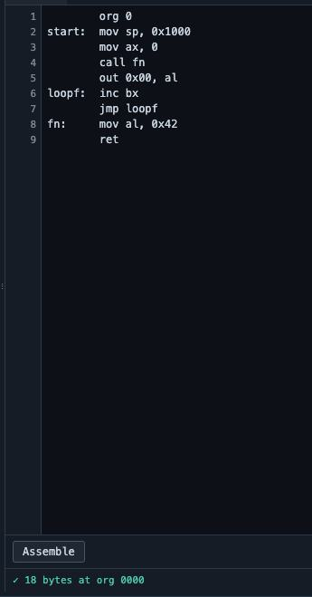
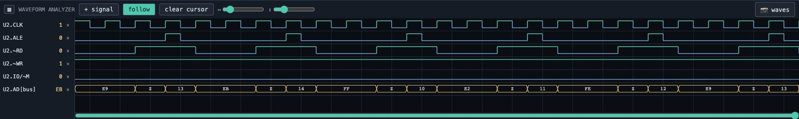
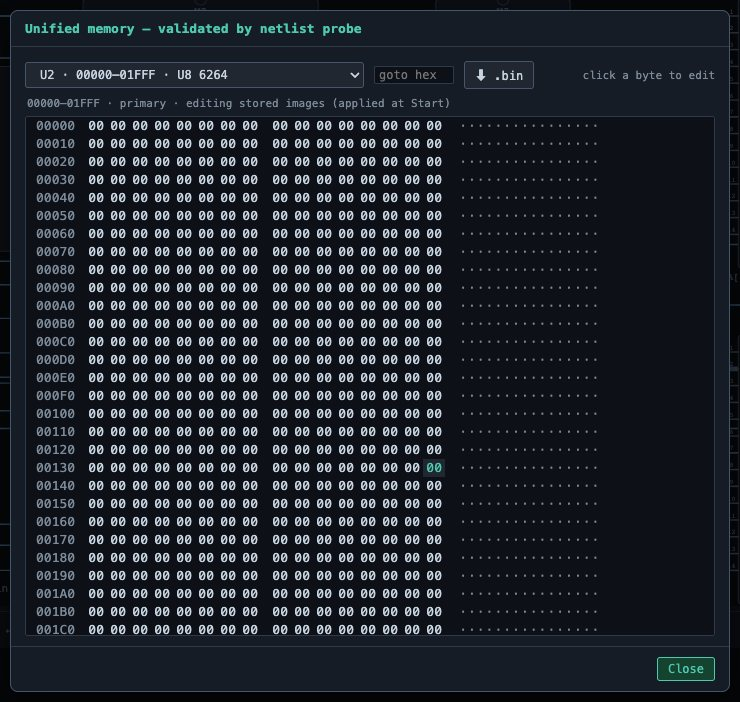
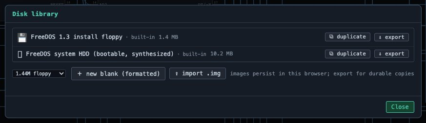
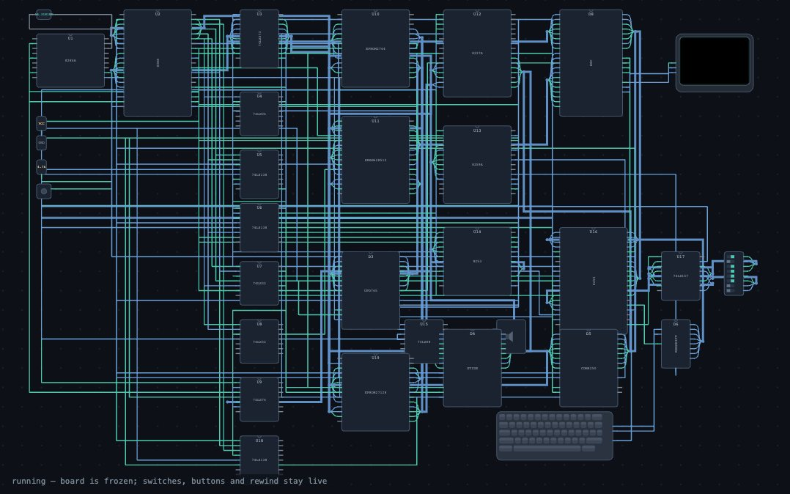
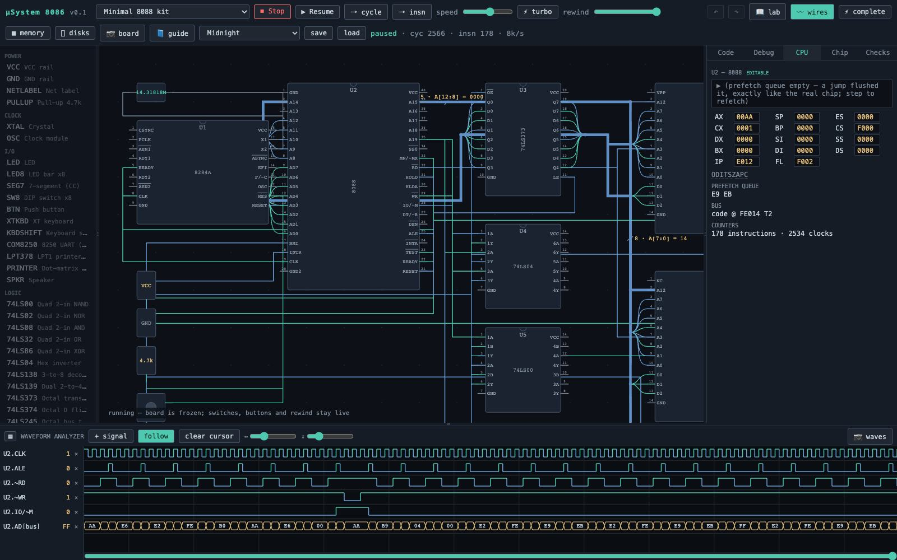
Why it exists
Hardware trainer kits taught a generation how a computer actually works: you could see the address latch, probe the chip select, and watch a bus cycle on a scope. They were also expensive, fragile, and fixed — you got the board the manufacturer soldered.
This is that bench, rebuilt as software, with the parts loose in a drawer. You wire the address latch yourself. You choose partial decoding and then discover the mirrors it creates. You strap a CPU into maximum mode and watch an 8288 take over the strobes. And when it does not work, the tool does what a scope and a logic analyzer would do: it shows you, honestly, what your board is really doing.